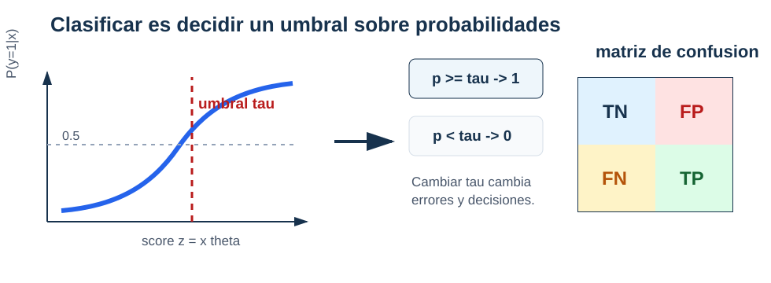

Regresión logística
Probabilidades, pérdida y decisiones en clasificación binaria
El conjunto clasificacion_binaria_sintetica.csv contiene 240 observaciones. La respuesta target vale 1 o 0 y las entradas disponibles para el modelo son x1 y x2. La columna slice identifica dos periodos de generación. En las 180 observaciones del periodo base, la proporción de unos es 0.428.
Una regla que siempre predice la clase mayoritaria alcanza accuracy 0.572 sin utilizar ninguna entrada y nunca detecta un positivo. Ese número fija un baseline, pero no responde la pregunta más importante: ¿podemos estimar cómo cambia la probabilidad de \(Y=1\) con \(\boldsymbol X=(X_1,X_2)\)?
El archivo también publica score_latente y probabilidad para que el mecanismo sintético pueda auditarse. Esas columnas revelan directamente cantidades usadas para generar la respuesta. Incluirlas como predictores convertiría el ejercicio en filtración de información. El modelo se ajustará solo con x1 y x2.
De una clase a una probabilidad condicional
Para una respuesta binaria,
\[ Y\mid\boldsymbol X=\boldsymbol x \sim\operatorname{Bernoulli}(\eta(\boldsymbol x)), \]
donde
\[ \eta(\boldsymbol x) =\mathbb P(Y=1\mid\boldsymbol X=\boldsymbol x) =\mathbb E[Y\mid\boldsymbol X=\boldsymbol x]. \]
\(\eta\) es una propiedad de la distribución poblacional. La regresión logística no la conoce; construye una aproximación dentro de la familia
\[ p_{\boldsymbol\theta}(\boldsymbol x) =\sigma(\boldsymbol\phi(\boldsymbol x)^\top\boldsymbol\theta), \]
con
\[ \sigma(z)=\frac1{1+e^{-z}}. \]
La sigmoide es creciente, toma valores estrictamente entre 0 y 1 y satisface \(\sigma(0)=1/2\). Su implementación debe evitar desbordamientos para logits de gran magnitud:
import numpy as np
def sigmoid(z):
z = np.asarray(z, dtype=float)
output = np.empty_like(z)
nonnegative = z >= 0
output[nonnegative] = 1 / (1 + np.exp(-z[nonnegative]))
exp_z = np.exp(z[~nonnegative])
output[~nonnegative] = exp_z / (1 + exp_z)
return outputPara un diseño \(\mathbf X\in\mathbb R^{n\times p}\),
\[ \boldsymbol z=\mathbf X\boldsymbol\theta, \qquad \widehat{\boldsymbol p}=\sigma(\boldsymbol z). \]
La igualdad \(\eta(\boldsymbol x)=p_{\boldsymbol\theta}(\boldsymbol x)\) es un supuesto de especificación, no una consecuencia de aplicar una sigmoide. Por eso diremos probabilidad estimada al hablar de la salida ajustada.
Una interpretación mediante odds
La inversa de la sigmoide da
\[ \log\left( \frac{p_{\boldsymbol\theta}(\boldsymbol x)} {1-p_{\boldsymbol\theta}(\boldsymbol x)} \right) =\boldsymbol\phi(\boldsymbol x)^\top\boldsymbol\theta. \]
Si las demás columnas se mantienen fijas, aumentar una unidad la característica \(j\) suma \(\theta_j\) a los log-odds y multiplica los odds por \(e^{\theta_j}\). El cambio en probabilidad no es constante: depende del punto de la sigmoide en el que se evalúa.
La pérdida proviene del modelo Bernoulli
Si una observación tiene probabilidad estimada \(p_i\), su masa Bernoulli es
\[ p_i^{y_i}(1-p_i)^{1-y_i}. \]
Bajo independencia condicional, la verosimilitud de la muestra es el producto de esas masas. Maximizar su logaritmo equivale a minimizar la log-loss promedio
\[ J(\boldsymbol\theta) =-\frac1n\sum_{i=1}^n \left[ y_i\log\widehat p_i +(1-y_i)\log(1-\widehat p_i) \right]. \]
Con \(z_i=\boldsymbol\phi(\boldsymbol x_i)^\top\boldsymbol\theta\), la misma cantidad puede escribirse de forma numéricamente estable:
\[ J(\boldsymbol\theta) =\frac1n\sum_{i=1}^n \left[\log(1+e^{z_i})-y_i z_i\right]. \]
def log_loss_from_logits(y, z):
y = np.asarray(y, dtype=float)
z = np.asarray(z, dtype=float)
return np.mean(np.logaddexp(0.0, z) - y * z)
def log_loss_binary(y, p, eps=1e-15):
y = np.asarray(y, dtype=float)
p = np.clip(np.asarray(p, dtype=float), eps, 1 - eps)
return -np.mean(y * np.log(p) + (1 - y) * np.log(1 - p))Recortar probabilidades evita evaluar \(\log(0)\) cuando solo se dispone de probabilidades. Trabajar con logits mediante logaddexp es preferible durante el ajuste.
Por qué la log-loss busca la probabilidad condicional
Fijemos \(\boldsymbol x\) y sea \(\eta=\mathbb P(Y=1\mid\boldsymbol X=\boldsymbol x)\). El riesgo condicional de reportar \(q\in(0,1)\) es
\[ L_{\boldsymbol x}(q) =-\eta\log q-(1-\eta)\log(1-q). \]
La diferencia respecto del mínimo es
\[ L_{\boldsymbol x}(q)-L_{\boldsymbol x}(\eta) =\operatorname{KL} (\operatorname{Bern}(\eta)\,\|\,\operatorname{Bern}(q)) \geq0. \]
La igualdad ocurre en \(q=\eta\). La log-loss no solo revisa de qué lado de un umbral queda una observación: compara una distribución Bernoulli completa. Una probabilidad muy segura y equivocada recibe una penalización grande.
Gradiente, Hessiana y convexidad
Para una observación,
\[ \frac{d\sigma(z)}{dz}=\sigma(z)(1-\sigma(z)) \]
y la regla de la cadena reduce la derivada de la log-loss respecto del logit a
\[ \frac{\partial\ell_i}{\partial z_i} =\widehat p_i-y_i. \]
Como \(\nabla_{\boldsymbol\theta}z_i=\boldsymbol\phi(\boldsymbol x_i)\), al sumar las observaciones se obtiene
\[ \nabla J(\boldsymbol\theta) =\frac1n\mathbf X^\top (\widehat{\boldsymbol p}-\mathbf y). \]
def logistic_gradient(X, y, theta):
probabilities = sigmoid(X @ theta)
return X.T @ (probabilities - y) / X.shape[0]Sea \(\mathbf W(\boldsymbol\theta)\) la matriz diagonal con entradas
\[ W_{ii}=\widehat p_i(1-\widehat p_i). \]
La Hessiana es
\[ \nabla^2J(\boldsymbol\theta) =\frac1n\mathbf X^\top\mathbf W(\boldsymbol\theta)\mathbf X. \]
Para todo \(\boldsymbol v\in\mathbb R^p\),
\[ \boldsymbol v^\top\nabla^2J(\boldsymbol\theta)\boldsymbol v =\frac1n\sum_{i=1}^n \widehat p_i(1-\widehat p_i) (\boldsymbol\phi(\boldsymbol x_i)^\top\boldsymbol v)^2 \geq0. \]
Convexidad de la log-loss logística. La log-loss empírica de la regresión logística es convexa. Si no hay direcciones no identificadas y los pesos son positivos, es estrictamente convexa en la región correspondiente.
La convexidad no garantiza que el mínimo se alcance en un parámetro finito. Si una recta separa perfectamente las clases, multiplicar sus coeficientes puede llevar las probabilidades hacia 0 y 1 mientras la pérdida se aproxima a cero y \(\lVert\boldsymbol\theta\rVert\) crece sin límite.
Pérdida decreciente con coeficientes crecientes. En datos separables, esta trayectoria no indica que falten iteraciones. Indica que el problema sin penalización no tiene un minimizador finito. Una penalización L2, sin incluir el intercepto, controla esa dirección y produce una solución finita.
Un paso batch de gradiente cuesta \(O(np)\). Los métodos de Newton utilizan la Hessiana, cuyo ensamblaje denso cuesta \(O(np^2)\) y cuya solución cuesta \(O(p^3)\). Las bibliotecas eligen entre métodos de Newton, quasi-Newton, gradiente y coordenadas según el tamaño y la penalización. El objetivo estadístico y el solver son decisiones diferentes.
La probabilidad todavía no es una decisión
Una regla binaria introduce un umbral \(\tau\):
\[ \widehat y_i(\tau)= \begin{cases} 1, & \widehat p_i\geq\tau,\\ 0, & \widehat p_i<\tau. \end{cases} \]
def predict_class(p, threshold=0.5):
return (np.asarray(p) >= threshold).astype(int)
El valor 0.5 no es una ley del modelo. Si un falso negativo cuesta más que un falso positivo, puede ser razonable predecir la clase positiva con una probabilidad menor. Si las probabilidades fueran conocidas y calibradas, con costos \(C_{\mathrm{FP}}\) y \(C_{\mathrm{FN}}\) la regla de costo esperado elegiría la clase positiva cuando
\[ p\geq \frac{C_{\mathrm{FP}}} {C_{\mathrm{FP}}+C_{\mathrm{FN}}}. \]
En la práctica, \(p\) es estimada, los costos pueden ser incompletos y la calibración puede fallar. El umbral se fija con validación y su consecuencia se reporta mediante conteos, no solo mediante una métrica agregada.
Matriz de confusión y métricas
Adoptaremos la orientación habitual:
| clase observada | predicho 0 | predicho 1 |
|---|---|---|
| real 0 | TN | FP |
| real 1 | FN | TP |
def confusion_counts(y_true, y_pred):
y_true = np.asarray(y_true)
y_pred = np.asarray(y_pred)
tp = np.sum((y_true == 1) & (y_pred == 1))
fp = np.sum((y_true == 0) & (y_pred == 1))
tn = np.sum((y_true == 0) & (y_pred == 0))
fn = np.sum((y_true == 1) & (y_pred == 0))
return tp, fp, tn, fnLos cuatro conteos producen
\[ \operatorname{accuracy} =\frac{TP+TN}{TP+TN+FP+FN}, \]
\[ \operatorname{precision} =\frac{TP}{TP+FP}, \qquad \operatorname{recall} =\frac{TP}{TP+FN}, \]
\[ F_1 =2\frac{\operatorname{precision}\operatorname{recall}} {\operatorname{precision}+\operatorname{recall}}. \]
Cuando un denominador es cero, la métrica necesita una convención explícita; no debe producirse un número silenciosamente.
def classification_metrics(y_true, y_pred):
tp, fp, tn, fn = confusion_counts(y_true, y_pred)
total = tp + fp + tn + fn
accuracy = (tp + tn) / total if total else np.nan
precision = tp / (tp + fp) if (tp + fp) else 0.0
recall = tp / (tp + fn) if (tp + fn) else 0.0
f1 = (
2 * precision * recall / (precision + recall)
if precision + recall else 0.0
)
return {
"accuracy": accuracy,
"precision": precision,
"recall": recall,
"f1": f1,
}Accuracy pondera por igual las observaciones y puede ocultar que la clase positiva nunca se detecta. Precision condiciona en las predicciones positivas; recall condiciona en los positivos reales. \(F_1\) combina ambas, pero tampoco incorpora por sí solo un costo, una capacidad de revisión ni la prevalencia de la población de uso.
Un umbral fijado con validación
Usamos únicamente las 180 observaciones del periodo base: 108 para entrenamiento, 36 para validación y 36 para prueba, con estratificación y semillas fijas. Una regresión logística ajustada con x1 y x2 obtiene log-loss de validación 0.533. Las clases de validación cambian así:
| umbral | TN | FP | FN | TP | accuracy | precision | recall | F1 |
|---|---|---|---|---|---|---|---|---|
| 0.3 | 6 | 15 | 1 | 14 | 0.556 | 0.483 | 0.933 | 0.636 |
| 0.4 | 11 | 10 | 2 | 13 | 0.667 | 0.565 | 0.867 | 0.684 |
| 0.5 | 18 | 3 | 3 | 12 | 0.833 | 0.800 | 0.800 | 0.800 |
| 0.6 | 20 | 1 | 7 | 8 | 0.778 | 0.889 | 0.533 | 0.667 |
| 0.7 | 20 | 1 | 12 | 3 | 0.639 | 0.750 | 0.200 | 0.316 |
Supongamos que el requisito fijado antes de mirar la tabla es alcanzar recall al menos 0.85 y, entre los umbrales que lo cumplen, usar el mayor para limitar falsos positivos. En esta rejilla se escoge \(\tau=0.4\).
def choose_threshold_for_recall(y_true, p, min_recall=0.85):
candidates = np.sort(np.unique(p))
feasible = []
for threshold in candidates:
metrics = classification_metrics(
y_true, predict_class(p, threshold)
)
if metrics["recall"] >= min_recall:
feasible.append(threshold)
return max(feasible) if feasible else NoneUna vez fijado el modelo y el umbral, prueba se consulta una sola vez. Allí se obtienen TN 9, FP 11, FN 0 y TP 16: accuracy 0.694, precision 0.593, recall 1.0 y \(F_1=0.744\). El umbral 0.5 habría dado mayor accuracy en prueba, pero escogerlo después de ver ese resultado violaría el procedimiento declarado.
La regla mayoritaria alcanza accuracy 0.556 en esta prueba y recall cero. El baseline muestra por qué la métrica primaria debe definirse antes de comparar modelos.
Calibración y alcance de las probabilidades
Un modelo está calibrado si, entre unidades con probabilidad estimada cercana a \(q\), la frecuencia observada de positivos es cercana a \(q\). La calibración es distinta del umbral y también de la capacidad para ordenar casos. Una sigmoide no garantiza calibración fuera de muestra.
En el dataset sintético podemos comparar las probabilidades estimadas con la columna probabilidad, porque conocemos el mecanismo generador. Esa comparación es un privilegio del experimento controlado. En una aplicación real, la calibración se estima con observaciones reservadas y conserva incertidumbre.
Las 60 filas del periodo reciente no se usarán para reajustar el ejemplo ni para escoger el umbral. Su distribución fue modificada deliberadamente y se retomará en la parte de estrategia para estudiar qué ocurre cuando cambian la prevalencia o las entradas. Mezclarlas aquí ocultaría precisamente el cambio que queremos diagnosticar después.
Síntesis
La regresión logística aproxima la probabilidad condicional de una respuesta Bernoulli mediante una sigmoide aplicada a un predictor lineal. La log-loss proviene de la verosimilitud Bernoulli y es una pérdida propia: su objetivo poblacional es la probabilidad condicional, no solo una etiqueta.
El gradiente conserva la forma matricial \(\mathbf X^\top(\widehat{\boldsymbol p}-\mathbf y)/n\) y la Hessiana es semidefinida positiva. La convexidad evita mínimos locales espurios, pero la separabilidad puede llevar los coeficientes al infinito si no hay regularización.
El modelo termina en una probabilidad estimada. El umbral añade una decisión y determina la matriz de confusión. Precision, recall, \(F_1\) y accuracy resumen aspectos distintos; ninguna reemplaza la declaración de la clase positiva, los costos y el procedimiento de validación.
Problemas integrados
1. Del mecanismo Bernoulli al gradiente
Use las filas base de clasificacion_binaria_sintetica.csv y solo x1, x2 como entradas.
- Calcule la prevalencia y el baseline mayoritario.
- Derive la log-loss desde la masa Bernoulli.
- Implemente sigmoide, pérdida desde logits y gradiente.
- Verifique el gradiente por diferencias finitas en cinco vectores de parámetros.
- Compare su ajuste con
LogisticRegressionusando la misma penalización o una penalización suficientemente pequeña y documentada.
2. Una probabilidad y dos decisiones
Considere etiquetas \(\mathbf y=(1,0,1,0,1,0)\) y probabilidades \(\widehat{\boldsymbol p}=(0.92,0.61,0.55,0.40,0.20,0.10)\).
- Calcule log-loss sin aplicar umbral.
- Construya matrices de confusión para \(\tau=0.5\) y \(\tau=0.7\).
- Calcule accuracy, precision, recall y \(F_1\).
- Proponga costos que hagan razonable cada umbral.
- Explique qué cambió en la decisión y qué permaneció igual en el modelo.
3. Selección de umbral reproducible
Reproduzca las particiones 108/36/36 del periodo base.
- Ajuste estandarización y regresión solo con entrenamiento.
- Construya la tabla de validación para una rejilla de umbrales.
- Declare antes de consultar prueba una restricción de recall o una función de costo.
- Fije el umbral, evalúe prueba una sola vez e incluya los cuatro conteos.
- Compare con la clase mayoritaria y explique por qué no cambiaría el umbral después de ver prueba.
4. Separabilidad y regularización
Construya dos grupos linealmente separables en \(\mathbb R^2\).
- Ejecute gradiente sin penalización y registre pérdida y norma de parámetros.
- Muestre que las clases permanecen correctas mientras la norma crece.
- Añada una penalización L2 que no incluya el intercepto.
- Compare convergencia, probabilidades y frontera para varias intensidades.
- Explique por qué un minimizador finito es una propiedad distinta de tener accuracy de entrenamiento igual a uno.
Respuestas seleccionadas
Problema 2. Con \(\tau=0.5\) se obtiene \((TP,FP,TN,FN)=(2,1,2,1)\) y las cuatro métricas son aproximadamente 0.667. Con \(\tau=0.7\) se obtiene \((1,0,3,2)\): precision es 1, recall es \(1/3\), accuracy es \(2/3\) y \(F_1=0.5\). Las probabilidades y su log-loss no cambian al mover el umbral.
Problema 4. En datos separables, multiplicar por una constante positiva un vector que separa aumenta los márgenes y hace que la log-loss se acerque a cero. La penalización L2 crece cuadráticamente con esa constante y evita que la norma pueda aumentar sin costo.